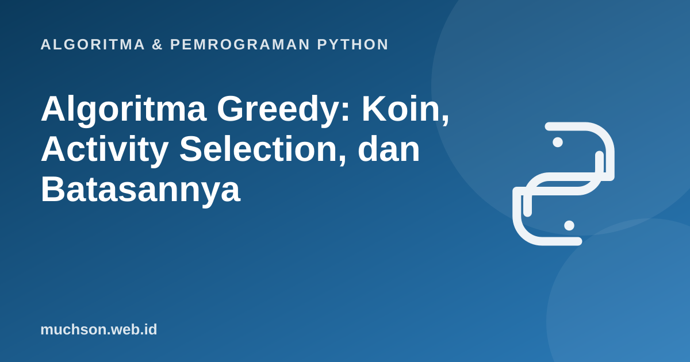

Beranda › Artikel › Algoritma & Pemrograman Python
Algoritma & Pemrograman PythonAlgoritma Greedy: Koin, Activity Selection, dan Batasannya
Algoritma greedy selalu memilih opsi yang tampak terbaik saat ini tanpa menengok ke belakang. Sering kali cepat dan sederhana, tetapi tidak selalu benar. Memahami kapan greedy terbukti optimal, dan kapan ia menipu, adalah inti materi ini.
Sebaiknya sudah paham: list dan sorting, fungsi, kompleksitas dasar

Setelah membaca dan mencoba materi ini, Anda mampu:
- menjelaskan prinsip pilihan greedy dan substruktur optimal
- menyelesaikan activity selection dengan greedy dan memahami alasan ia optimal
- menunjukkan contoh tandingan ketika greedy gagal (penukaran koin)
- membedakan greedy dari dynamic programming dan brute force
Ide greedy
Pada setiap langkah, ambil pilihan yang paling menjanjikan saat itu dan jangan pernah mengubahnya. Dua syarat agar greedy benar: sifat pilihan greedy (ada solusi optimal yang memuat pilihan itu) dan substruktur optimal (sisa masalah setelah pilihan itu berbentuk masalah serupa yang lebih kecil).
Contoh 1: penukaran koin
def tukar_greedy(nilai, koin):
hasil = []
for k in sorted(koin, reverse=True): # mulai dari koin terbesar
while nilai >= k:
nilai -= k
hasil.append(k)
return hasil if nilai == 0 else None
rupiah = [1000, 500, 200, 100]
print(tukar_greedy(1800, rupiah))
print(tukar_greedy(1300, rupiah))[1000, 500, 200, 100]
[1000, 200, 100]
Greedy pada koin bergantung pada sistem pecahannya. Pada pecahan {1, 3, 4}, uang 6 ditukar greedy menjadi 4+1+1 (3 koin), padahal 3+3 (2 koin) lebih baik.
print("greedy :", tukar_greedy(6, [1, 3, 4]))
# solusi benar via DP sederhana (jumlah koin minimum)
def min_koin(nilai, koin):
INF = float("inf")
dp = [0] + [INF] * nilai
for n in range(1, nilai + 1):
for k in koin:
if k <= n and dp[n - k] + 1 < dp[n]:
dp[n] = dp[n - k] + 1
return dp[nilai]
print("optimal:", min_koin(6, [1, 3, 4]), "koin")greedy : [4, 1, 1]
optimal: 2 koin
Contoh 2: activity selection
Diberikan kegiatan dengan waktu mulai dan selesai. Pilih sebanyak mungkin kegiatan yang tidak bertabrakan. Strategi greedy yang benar: urutkan berdasarkan waktu selesai paling awal, lalu ambil setiap kegiatan yang tidak bertabrakan dengan yang terakhir diambil.
def pilih_kegiatan(kegiatan):
terurut = sorted(kegiatan, key=lambda k: k[1]) # urut waktu selesai
dipilih, selesai_terakhir = [], float("-inf")
for mulai, selesai, nama in terurut:
if mulai >= selesai_terakhir: # tidak bertabrakan
dipilih.append(nama)
selesai_terakhir = selesai
return dipilih
kegiatan = [(1, 4, "A"), (3, 5, "B"), (0, 6, "C"), (5, 7, "D"),
(3, 9, "E"), (5, 9, "F"), (6, 10, "G"), (8, 11, "H"), (8, 12, "I"), (2, 14, "J"), (12, 16, "K")]
print(pilih_kegiatan(kegiatan))['A', 'D', 'H', 'K']
Mengapa mengurutkan menurut waktu selesai?
Strategi yang tampak menggoda tetapi salah: ambil yang mulai paling awal atau yang paling singkat. Kegiatan J (2–14) mulai awal tetapi memakan hampir seluruh waktu; kegiatan pendek bisa saja berada di tengah dua kegiatan lain dan menghalangi keduanya. Kegiatan yang selesai paling awal menyisakan waktu terbanyak bagi sisanya.
def salah_mulai_awal(kegiatan):
dipilih, selesai_terakhir = [], float("-inf")
for mulai, selesai, nama in sorted(kegiatan): # urut waktu mulai
if mulai >= selesai_terakhir:
dipilih.append(nama); selesai_terakhir = selesai
return dipilih
print("urut mulai :", salah_mulai_awal(kegiatan))
print("urut selesai:", pilih_kegiatan(kegiatan))urut mulai : ['C', 'G', 'K']
urut selesai: ['A', 'D', 'H', 'K']
Argumen pertukaran (exchange argument): ambil solusi optimal mana pun. Kegiatan pertamanya bisa ditukar dengan kegiatan yang selesai paling awal tanpa menimbulkan tabrakan dan tanpa mengurangi jumlah kegiatan. Maka ada solusi optimal yang memuat pilihan greedy; sisanya adalah masalah yang sama pada kegiatan setelahnya.
Greedy, DP, dan brute force
| Pendekatan | Cara kerja | Kecepatan | Selalu optimal? |
|---|---|---|---|
| Brute force | Coba semua kemungkinan | Sangat lambat (eksponensial) | Ya |
| Greedy | Pilih terbaik saat ini | Cepat | Hanya bila terbukti |
| Dynamic programming | Simpan hasil submasalah, pilih terbaik dari semua | Polinomial | Ya (bila ada substruktur optimal) |
1. Tukar 2.700 rupiah dengan pecahan {1000, 500, 200, 100} secara greedy.
2. Cari satu sistem pecahan dan nilai di mana greedy tidak optimal selain contoh di atas.
3. Mengapa mengurutkan menurut durasi terpendek tidak menjamin optimal pada activity selection?
4. Berapa kompleksitas pilih_kegiatan?
- Greedy memilih terbaik lokal; benar hanya bila ada sifat pilihan greedy dan substruktur optimal.
- Activity selection: urut waktu selesai, ambil yang tidak bertabrakan.
- Koin: greedy optimal untuk sistem pecahan tertentu, tidak untuk semua.
- Contoh tandingan membantah greedy; bukti formal (exchange argument) menegakkannya.
Tanya jawab
Algoritma terkenal apa saja yang greedy?
Apakah greedy selalu lebih cepat dari DP?
Bagaimana mengenali masalah yang cocok untuk greedy?
Referensi
- Cormen, Leiserson, Rivest, Stein, Introduction to Algorithms (edisi ke-4, MIT Press, 2022)
- Jon Kleinberg dan Éva Tardos, Algorithm Design (Pearson)
- Anany Levitin, Introduction to the Design and Analysis of Algorithms (Pearson)
- MIT OpenCourseWare 6.006: Introduction to Algorithms